このページでは、アモアスのMODを複数導入する手順を解説します。通常は違うMODを使用する度にゲームフォルダの中身を入れ替える必要がありますが、この手順を使用することでその必要がなくなります。説明にはWin10、Steamを使用しています。Win11ではエクスプローラの操作やUIがかなり違いますが、併記しているキーボードショートカットを使えばたぶんできると思います。画像にマウスを重ねたりタップしたりすると拡大されます。
LogicoolのGHUBなどでキー設定の変更などをしている場合は、このページの方法で行うと設定が反映されなくなることがあります。設定を維持したい場合はこのページの方法は使えないので、都度MODの入れ替えやフォルダ名の変更などを行いSteamからアモアスを起動する必要があります。
導入
-
ゲームフォルダを複製する
-
Steamのアモアスのページからローカルファイルを閲覧
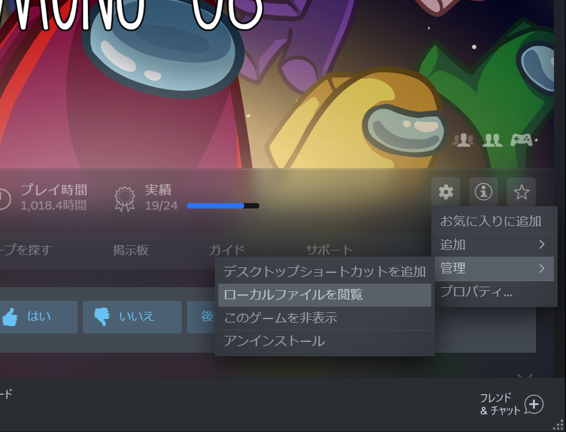
-
エクスプローラのウィンドウが開くので、左上の上矢印をクリック、もしくはAlt+↑でcommonフォルダに移動
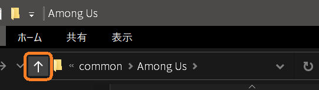
-
Among Usフォルダを右クリックしてコピー→何もないところを右クリックして貼り付け、もしくはCtrl+C→Ctrl+Vでフォルダを複製
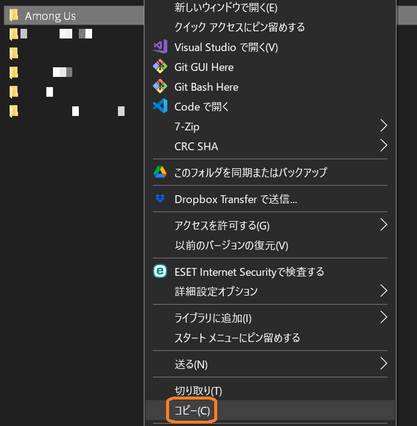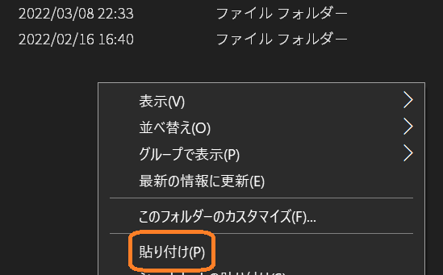
-
できたAmong Us - コピーフォルダを右クリック→名前の変更、もしくはフォルダを選択した状態でキーボードのF2キーを押して好きな名前に変更する(Among Us - [MOD名]などのわかりやすい名前にしておくのがおすすめ)
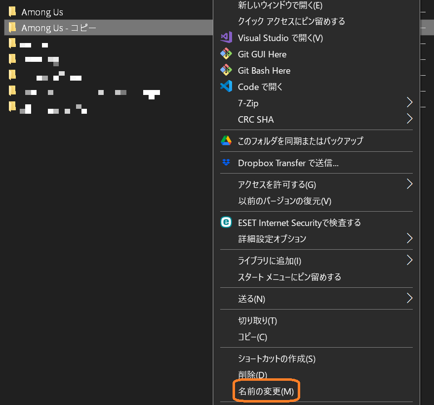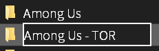
-
Steamのアモアスのページからローカルファイルを閲覧
- 名前を変えたフォルダにMODを導入する
アモアスの起動
コピーしてMODを導入したフォルダの中にあるAmong Us.exe(環境によってはAmong Usと表示される)を起動すると、それぞれのMODが入った状態のアモアスが起動される
デスクトップなどにショートカットを作成しておくと次回以降の起動が楽です。方法はネット上に山ほど解説記事があるのでここでは割愛します
起動後、ログインに失敗する場合
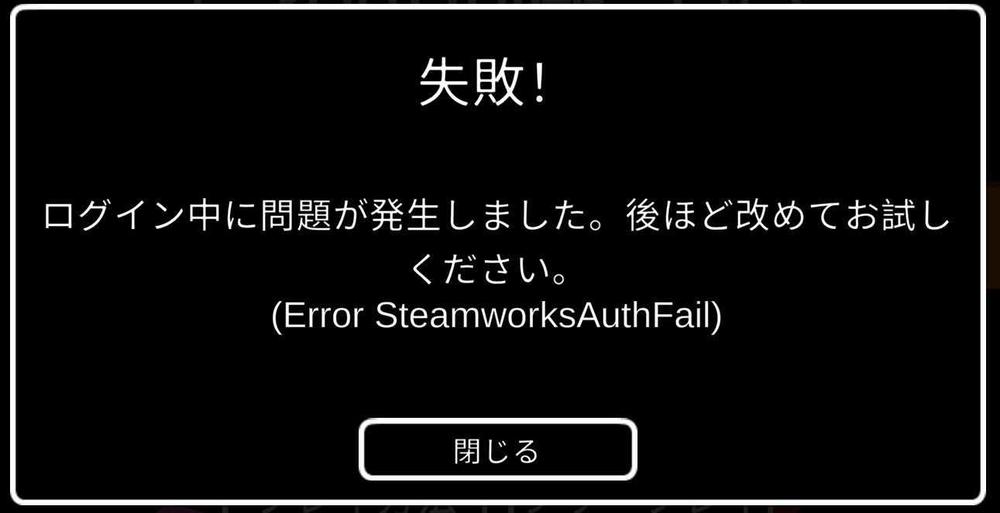
一部のMODでは、このような画面でログインに失敗することがあります。その場合、アモアスを閉じてから以下の手順を行うと直る可能性があります(Steamのみ)。
-
ログインに失敗するアモアスのフォルダを開く(上でAmong Us - [MOD名]などの名前に変更した、Among Us_DataやBepInExなどのあるところ)
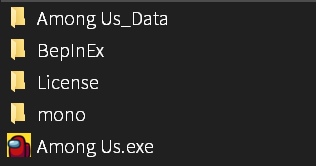
-
steam_appid.txtを作成する
-
なにもないところを右クリックし、新規作成→テキスト ドキュメント
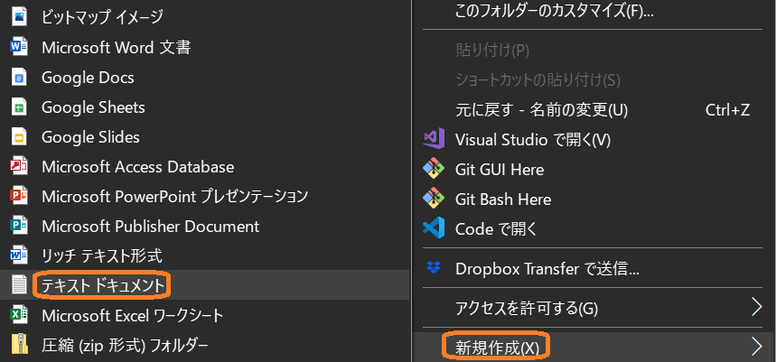
-
作成したテキストのファイル名の新しいテキスト ドキュメントの部分をsteam_appidに変更する
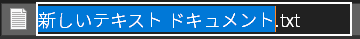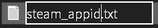画像にある.txtの部分は設定によっては表示されません。表示されている場合は.txtの部分は書き換えたり削除したりする必要はありませんし、表示されていない場合も.txtを書き加えたりする必要はありません。
-
作成したファイルをダブルクリックで開く。すると、何も書かれていない空のメモ帳ウィンドウが開くので、そこに945360と入力する
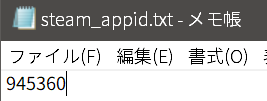
- Ctrl+Sで保存し、メモ帳を閉じる
-
なにもないところを右クリックし、新規作成→テキスト ドキュメント
- アモアスを起動し、左上の｢アカウント｣から｢ログイン｣を押し、ログインに成功することを確認する